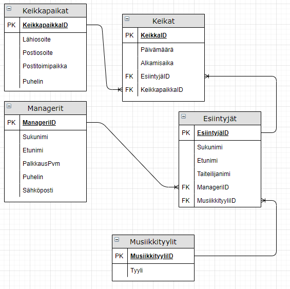
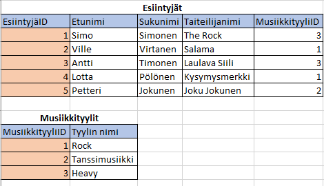

1. Artistit-tietokanta
Tämä harjoitus tehdään pitkälti yhdessä, samalla tulee uusia asioita SQL-kielestä ja phpMyAdmin-sovelluksesta.
Tietokannan luonti

Toteutetaan kuvan mukainen tietokanta ja laaditaan siitä joukko kyselyitä.

- Uusi taulu: luo taulu Managerit phpMyAdminin avulla. Mieti mitkä olisivat järkeviä kentän tyyppejä. Muista lisätä pääavain! Pääavaimella muista autoincrement.

- Vierasavain: luo taulu Esiintyjät. Lisää vierasavainta varten INTEGER-kenttä. Lisää yhteys phpMyAdminissa. Vierasavaimelle tarvitaan indeksi (Indeksi - INDEX). Siirry relaationäkymään (Relation view) luodaksesi yhteys.

- Tietokannan toteutus: lisää muut taulut ja yhteydet samaan tapaan kuin äsken. Kannattaa ensin tehdä taulut ja vasta tämän jälkeen yhteydet.
- Kokeile syöttää hieman tietoa tietokantaasi. Katso alla kyselyitä ja tee sellaisia tietoja joiden avulla kyselyiden tekeminen onnistuu.
- Lisää ainakin kolme manageria.
- Lisää muutama musiikkityyli, tee yhdestä tyylistä "Rock".
- Lisää ainakin kaksi esiintyjää joista jompi kumpi on Rock-tyylin edustaja.
- Lisää ainakin kolme keikkaa, osa keikoista tänä vuonna ja osa viime vuonna.
- Lisää ainakin muutama keikkapaikka.
SQL-kieli
SELECT-kyselyn avulla haetaan tietokannan taulusta tietoja. Lisätään kyselyt harjoituskansioon omaksi tehtäväksi, tee niille esimerkiksi sivu harj_sql_1.php. Lisää sivulle vähintään numerot 1...10 ja kopioi oma ratkaisusi. Ratkaisun voi sijoittaa esim. pre tai code -elementtien sisälle.
- Hae kaikki keikkapaikat jotka sijaitsevat Tampereella. Aseta ehto WHERE-osaan. Lisää harjoitussivullesi SQL-kysely vastauksena.
- Hae kaikki keikat päivämäärän mukaan nousevaan järjestykseen järjestettynä (ASC). Nyt lisätään kyselyn loppuun ORDER BY-termi. Lisää SQL-kysely vastaussivullesi.
- Hae kaikki esiintyjät joiden sukunimi alkaa tietyllä kirjaimella. Nyt tarvitset ehdossa LIKE-termiä ja katkaisumerkkiä.
- Tee kysely, jonka avulla saat selville kaikkien managerien tiedot nimien mukaisessa aakkosjärjestyksessä (sukunimi ensisijainen ja etunimi toissijainen lajittelukenttä).
Kun haetaan kahdesta taulusta tietoja yhdistetään ne INNER JOIN -määreellä (joskus myös LEFT tai RIGHT JOIN).

- Hae tieto esiintyjistä ja heidän musiikkityylistään. Näytä vain kentät taiteilijanimi ja tyyli.
- Hae tieto esiintyjistä ja heidän musiikkityylistään. Näytä vain kentät taiteilijanimi ja tyyli. Rajoita WHERE-termillä vain esiintyjiin joiden tyyli on "Rock".
- Hae kaikki tietyn keikkapaikan keikat. Rajoita WHERE-termillä esim.
WHERE KeikkapaikkaID=1
Näytä keikkapaikan lähiosoite ja keikkojen alkamisaika sekä päivämäärä.
Yleensä monimutkaisimmat kyselyt tulevat tietojen hakemisesta. Muu tietokannan tietokannan tietojen käsittely (lisääminen, poistaminen ja muokkaaminen) on helpompaa. Yhdessä tästä käsittelystä käytetään lyhennettä CRUD.
- Kokeile INSERT-kyselyn tekemistä, lisää tietokantaasi uusi musiikkityyli jonka tyylin nimi on "Testi".
- Tee UPDATE-kysely joka muuttaa tyylin "Testi" arvoksi "Kokeilu"
- Tee DELETE-kysely jolla poistat "Kokeilu"-nimisen musiikkityylin. Huom. muista aina DELETE-kyselyissä WHERE-osa, jos se jää pois tyhjennetään koko taulu!
Lisäharjoitukset
- Laadi kysely jolla haet kaikki viime vuoden keikat.
- Lisää edelliseen kyselyyn INNER JOIN tauluihin Keikkapaikat ja Esiintyjät. Näytä seuraavat kentät: Päivämäärä, Lähiosoite, Taitailijanimi.